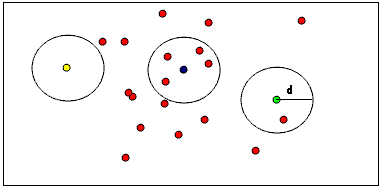

01-点云滤波Filtering *¶
点云滤波概述¶
在获取点云数据时，由于设备精度、操作者经验、环境因素等带来的影响，以及电磁波衍射特性、被测物体表面性质变化和数据拼接配准操作过程的影响，点云数据中将不可避免地出现一些噪声点。实际应用中除了这些测量随机误差产生的噪声点之外，由于受到外界干扰如视线遮挡、障碍物等因素的影响，点云数据中往往存在着一些离主体点云较远的离散点，即离群点。不同的获取设备点云噪声结构也有不同。
通过滤波完成的功能还包括孔洞修复、最小信息损失的海量点云数据压缩处理等 。在点云处理流程中滤波处理作为预处理的第一步，往往对后续处理流程影响很大，只有在滤波预处理中将噪声点、离群点、孔洞、数据压缩等 按照后续需求处理，才能够更好地进行配准、特征提取、曲面重建、可视化等后续流程。
PCL 中点云滤波模块提供了很多灵活实用的滤波处理算法，例如双边滤波、高斯滤波、条件滤波、直通滤波、基于随机采样一致性滤波RANSAC等。滤波模块是作为 PCL的一个重要处理模块，其在应用中可以非常方便与其他点云处理流程协同使用。
- 滤波相关文档：
https://pcl-tutorials.readthedocs.io/en/latest/#filtering
- 应用场景
- 点云数据密度不规则需要平滑处理
- 去除因为遮挡等问题造成离群点
- 数据量较大，需要进行下采样( Downsample)
- 去除噪声数据。
- 示例
下图显示了一个噪声消除的示例。 由于测量误差，某些数据集会出现大量阴影点。 这使局部点云3D特征的估算变得复杂。我们通过对每个点的邻域进行统计分析，并修剪掉不符合特定条件的那些异常值，进而可以过滤掉某些异常值。
PCL中的实现这些稀疏离群值的消除，需要计算数据集中的点与邻居距离的分布。 即对于每个点，都会计算从它到所有相邻点的平均距离。 通过假设结果分布是具有均值和标准差的高斯分布，可以将那些平均距离在【由全局距离均值和标准差定义的区间】之外的所有点视为离群值，并将之从数据集中进行修剪。

直通滤波PassThrough *¶
代码实现¶
PassThrough.cpp
#include <iostream>
#include <pcl/point_types.h>
#include <pcl/filters/passthrough.h>
#include <pcl/visualization/cloud_viewer.h>
typedef pcl::PointXYZ PointT;
int
main(int argc, char **argv) {
pcl::PointCloud<pcl::PointXYZ>::Ptr cloud(new pcl::PointCloud<pcl::PointXYZ>);
pcl::PointCloud<pcl::PointXYZ>::Ptr cloud_filtered(new pcl::PointCloud<pcl::PointXYZ>);
// Fill in the cloud data
cloud->width = 5;
cloud->height = 1;
cloud->points.resize(cloud->width * cloud->height);
for (size_t i = 0; i < cloud->points.size(); ++i) {
cloud->points[i].x = 1024 * rand() / (RAND_MAX + 1.0f);
cloud->points[i].y = 1024 * rand() / (RAND_MAX + 1.0f);
cloud->points[i].z = 1024 * rand() / (RAND_MAX + 1.0f);
}
std::cerr << "Cloud before filtering: " << std::endl;
for (size_t i = 0; i < cloud->points.size(); ++i)
std::cerr << " " << cloud->points[i].x << " "
<< cloud->points[i].y << " "
<< cloud->points[i].z << std::endl;
// Create the filtering object
pcl::PassThrough<pcl::PointXYZ> pass;
pass.setInputCloud(cloud); // 1. 设置输入源
pass.setFilterFieldName("z"); // 2. 设置过滤域名
pass.setFilterLimits(0.0, 1.0); // 3. 设置过滤范围
// pass.setFilterLimitsNegative(true); // 设置获取Limits之外的内容
pass.filter(*cloud_filtered); // 4. 执行过滤，并将结果输出到cloud_filtered
std::cerr << "Cloud after filtering: " << std::endl;
for (size_t i = 0; i < cloud_filtered->points.size(); ++i)
std::cerr << " " << cloud_filtered->points[i].x << " "
<< cloud_filtered->points[i].y << " "
<< cloud_filtered->points[i].z << std::endl;
pcl::visualization::CloudViewer viewer("Cloud Viewer");
//这里会一直阻塞直到点云被渲染
viewer.showCloud(cloud);
while (!viewer.wasStopped()) {
}
return (0);
}
输出结果¶
Cloud before filtering:
0.352222 -0.151883 -0.106395
-0.397406 -0.473106 0.292602
-0.731898 0.667105 0.441304
-0.734766 0.854581 -0.0361733
-0.4607 -0.277468 -0.916762
Cloud after filtering:
-0.397406 -0.473106 0.292602
-0.731898 0.667105 0.441304
实现效果¶
可见以下Z轴正方向的两个绿色的点被保留，Z轴负方向的红色点被过滤掉。

取反
如果使用了pass.setFilterLimitsNegative (true);，则以上结果取反。
降采样&VoxelGrid *¶
通过体素网格实现降采样，可以减少点数量的同时，保证点云的形状特征，可以提高配准、曲面重建、形状识别等算法的速度，并保证准确性。
官方文档：https://pcl-tutorials.readthedocs.io/en/latest/voxel_grid.html#voxelgrid
代码实现¶
downsample_voxel_grid.cpp
#include <iostream>
#include <pcl/io/pcd_io.h>
#include <pcl/point_types.h>
#include <pcl/filters/voxel_grid.h>
int
main (int argc, char** argv)
{
pcl::PCLPointCloud2::Ptr cloud (new pcl::PCLPointCloud2 ());
pcl::PCLPointCloud2::Ptr cloud_filtered (new pcl::PCLPointCloud2 ());
// 从文件读取点云图
// Fill in the cloud data
pcl::PCDReader reader;
// Replace the path below with the path where you saved your file
reader.read ("./data/table_scene_lms400.pcd", *cloud); // Remember to download the file first!
std::cerr << "PointCloud before filtering: " << cloud->width * cloud->height
<< " data points (" << pcl::getFieldsList (*cloud) << ").";
// 创建一个长宽高分别是1cm的体素过滤器，cloud作为输入数据，cloud_filtered作为输出数据
float leftSize = 0.01f;
// Create the filtering object
pcl::VoxelGrid<pcl::PCLPointCloud2> sor;
sor.setInputCloud (cloud);
sor.setLeafSize (leftSize, leftSize, leftSize);
sor.filter (*cloud_filtered);
std::cerr << "PointCloud after filtering: " << cloud_filtered->width * cloud_filtered->height
<< " data points (" << pcl::getFieldsList (*cloud_filtered) << ").";
// 将结果输出到文件
pcl::PCDWriter writer;
writer.write ("./data/table_scene_lms400_downsampled.pcd", *cloud_filtered);
return (0);
}
输出结果¶
PointCloud before filtering: 460400 data points (x y z intensity distance sid).
PointCloud after filtering: 41049 data points (x y z intensity distance sid).
-
原pcd文件
# .PCD v0.7 - Point Cloud Data file format VERSION 0.7 FIELDS x y z intensity distance sid SIZE 4 4 4 4 4 4 TYPE F F F F F F COUNT 1 1 1 1 1 1 WIDTH 460400 HEIGHT 1 VIEWPOINT 0 0 0 1 0 0 0 POINTS 460400 DATA binary_compressed ...
-
降采样后pcd文件
# .PCD v0.7 - Point Cloud Data file format VERSION 0.7 FIELDS x y z intensity distance sid SIZE 4 4 4 4 4 4 TYPE F F F F F F COUNT 1 1 1 1 1 1 WIDTH 41049 HEIGHT 1 VIEWPOINT 0 0 0 1 0 0 0 POINTS 41049 DATA ascii ...
可以看到POINTS个数从原来的460400个减少为41049个
实现效果¶
- 双屏对比
pcl_viewer -multiview 1 ./data/table_scene_mug_stereo_textured.pcd ./data/table_scene_mug_stereo_textured_downsampled.pcd
离群点移除 *¶
激光扫描通常会生成不同点密度的点云数据集。此外，测量误差会导致稀疏的异常值，从而进一步破坏结果。这会使局部点云特征（例如表面法线或曲率变化）的估计复杂化，从而导致错误的值，进而可能导致点云配准失败。通过对每个点的邻域进行统计分析，并对不符合特定条件的部分进行修整，可以解决其中一些不规则现象。
稀疏离群值的消除基于输入数据集中点到邻居距离的分布的计算。对于每个点，我们计算从它到所有相邻点的平均距离。通过假设结果分布是具有均值和标准差的高斯分布，可以将其平均距离在由全局距离均值和标准差定义的区间之外的所有点视为离群值并从数据集中进行修剪。 下图显示了稀疏离群值分析和删除的效果：原始数据集显示在左侧，结果数据集显示在右侧。数据集图显示了滤波前后每个点的邻域中平均K最近邻距离。
官方文档：https://pcl-tutorials.readthedocs.io/en/latest/statistical_outlier.html#statistical-outlier-removal
StatisticalOutlierRemoval¶
接下来，我们使用StatisticalOutlierRemoval（统计学离群点移除过滤器）移除噪点。
实现步骤：
-
查找每一个点的所有邻域点
-
计算每个点到其邻居的距离d_{ij}，其中i=[1,...,m]表示共m个点，j=[1,...,k]每个点有k个邻居
-
根据高斯分布d \sim N(\mu, \sigma)模型化距离参数，计算所有点与邻居的\mu（距离的均值），\sigma（距离的标准差），如下：
-
为每一个点，计算其与邻居的距离均值\sum_{j=1}^{k} d_{i j}
-
遍历所有点，如果其距离的均值大于高斯分布的指定置信度，则移除，比如：
\sum_{j=1}^{k} d_{i j}>\mu+3 \sigma or \sum_{j=1}^{k} d_{i j}<\mu-3 \sigma
代码实现¶
statistical_removal.cpp
/**
* @Author: PoplarTang
* @CreateTime: 2019-11-06
* @Description: 使用StatisticalOutlierRemoval统计学离群点移除过滤器移除噪点
*/
#include <iostream>
#include <pcl/io/pcd_io.h>
#include <pcl/point_types.h>
#include <pcl/filters/statistical_outlier_removal.h>
int
main (int argc, char** argv)
{
pcl::PointCloud<pcl::PointXYZ>::Ptr cloud (new pcl::PointCloud<pcl::PointXYZ>);
pcl::PointCloud<pcl::PointXYZ>::Ptr cloud_filtered (new pcl::PointCloud<pcl::PointXYZ>);
// 从文件读取点云
// Fill in the cloud data
pcl::PCDReader reader;
// Replace the path below with the path where you saved your file
reader.read<pcl::PointXYZ> ("./data/table_scene_lms400.pcd", *cloud);
std::cerr << "Cloud before filtering: " << std::endl;
std::cerr << *cloud << std::endl;
// 创建过滤器，每个点分析计算时考虑的最近邻居个数为50个；
// 设置标准差阈值为1，这意味着所有距离查询点的平均距离的标准偏差均大于1个标准偏差的所有点都将被标记为离群值并删除。
// 计算输出并将其存储在cloud_filtered中
// Create the filtering object
pcl::StatisticalOutlierRemoval<pcl::PointXYZ> sor;
sor.setInputCloud (cloud);
// 设置平均距离估计的最近邻居的数量K
sor.setMeanK (50);
// 设置标准差阈值系数
sor.setStddevMulThresh (1.0);
// 执行过滤
sor.filter (*cloud_filtered);
std::cerr << "Cloud after filtering: " << std::endl;
std::cerr << *cloud_filtered << std::endl;
// 将留下来的点保存到后缀为_inliers.pcd的文件
pcl::PCDWriter writer;
writer.write<pcl::PointXYZ> ("./data/table_scene_lms400_inliers.pcd", *cloud_filtered, false);
// 使用个相同的过滤器，但是对输出结果取反，则得到那些被过滤掉的点，保存到_outliers.pcd文件
sor.setNegative (true);
sor.filter (*cloud_filtered);
writer.write<pcl::PointXYZ> ("./data/table_scene_lms400_outliers.pcd", *cloud_filtered, false);
return (0);
}
输出结果¶
Cloud before filtering:
header:
seq: 0
stamp: 0
frame_id:
points[]: 460400
width: 460400
height: 1
is_dense: 1
sensor origin (xyz): [0, 0, 0] / orientation (xyzw): [0, 0, 0, 1]
Cloud after filtering:
header:
seq: 0
stamp: 0
frame_id:
points[]: 451410
width: 451410
height: 1
is_dense: 1
sensor origin (xyz): [0, 0, 0] / orientation (xyzw): [0, 0, 0, 1]
实现效果¶
-
单图对比：黄色部分为移除的离群点，蓝绿色部分为保留的点
pcl_viewer ./data/table_scene_lms400_inliers.pcd ./data/table_scene_lms400_outliers.pcd
-
双图对比：左图为已处理群点后的点云，右图为被移除的点云
pcl_viewer -multiview 1 ./data/table_scene_lms400_inliers.pcd ./data/table_scene_lms400_outliers.pcd
ConditionalRemoval¶
条件滤波，设置不同维度滤波规则进行滤波，具体见下个与【半径离群值滤波】合并的案例。
RadiusOutlierRemoval¶
半径离群值滤波
下图有助于可视化RadiusOutlierRemoval过滤器对象的作用。用户指定邻居的个数，要每个点必须在指定半径内具有指定个邻居才能保留在PointCloud中。例如，如果指定了1个邻居，则只会从PointCloud中删除黄点。如果指定了2个邻居，则黄色和绿色的点都将从PointCloud中删除。
官方文档：https://pcl-tutorials.readthedocs.io/en/latest/remove_outliers.html#remove-outliers

代码实现¶
remove_outliers.cpp
- 定义点云显示函数
#include <iostream>
#include <pcl/point_types.h>
#include <pcl/filters/radius_outlier_removal.h>
#include <pcl/filters/conditional_removal.h>
#include <pcl/visualization/pcl_visualizer.h>
typedef pcl::PointXYZ PointType;
void
showPointClouds(const pcl::PointCloud<PointType>::Ptr &cloud, const pcl::PointCloud<PointType>::Ptr &cloud2) {// 创建PCLVisualizer
pcl::visualization::PCLVisualizer::Ptr viewer(new pcl::visualization::PCLVisualizer("3D Viewer"));
// 设置背景色为灰色
viewer->setBackgroundColor(0.05, 0.05, 0.05, 0);
// 添加一个普通点云 (可以设置指定颜色，也可以去掉single_color参数不设置)
pcl::visualization::PointCloudColorHandlerCustom<PointType> single_color(cloud, 0, 255, 0);
viewer->addPointCloud<PointType>(cloud, single_color, "sample cloud");
viewer->setPointCloudRenderingProperties(pcl::visualization::PCL_VISUALIZER_POINT_SIZE, 2, "sample cloud");
// 添加一个第二个点云 (可以设置指定颜色，也可以去掉single_color2参数不设置)
pcl::visualization::PointCloudColorHandlerCustom<PointType> single_color2(cloud, 255, 0, 0);
viewer->addPointCloud<PointType>(cloud2, single_color2, "sample cloud 2");
viewer->setPointCloudRenderingProperties(pcl::visualization::PCL_VISUALIZER_POINT_SIZE, 4, "sample cloud 2");
viewer->addCoordinateSystem(1.0);
while (!viewer->wasStopped()) {
viewer->spinOnce();
}
}
- 实现main函数
int
main(int argc, char **argv) {
if (argc != 2) {
std::cerr << "please specify command line arg '-r' or '-c'" << std::endl;
exit(0);
}
pcl::PointCloud<pcl::PointXYZ>::Ptr cloud(new pcl::PointCloud<pcl::PointXYZ>);
pcl::PointCloud<pcl::PointXYZ>::Ptr cloud_filtered(new pcl::PointCloud<pcl::PointXYZ>);
// Fill in the cloud data
cloud->width = 100;
cloud->height = 1;
cloud->points.resize(cloud->width * cloud->height);
for (size_t i = 0; i < cloud->points.size(); ++i) {
cloud->points[i].x = 1024 * rand() / (RAND_MAX + 1.0f);
cloud->points[i].y = 1024 * rand() / (RAND_MAX + 1.0f);
cloud->points[i].z = 1024 * rand() / (RAND_MAX + 1.0f);
}
if (strcmp(argv[1], "-r") == 0) {
pcl::RadiusOutlierRemoval<pcl::PointXYZ> outrem;
// build the filter
outrem.setInputCloud(cloud);
outrem.setRadiusSearch(0.4);
outrem.setMinNeighborsInRadius(2);
// apply filter
outrem.filter(*cloud_filtered);
} else if (strcmp(argv[1], "-c") == 0) {
// build the condition
pcl::ConditionAnd<pcl::PointXYZ>::Ptr range_cond(new pcl::ConditionAnd<pcl::PointXYZ>());
range_cond->addComparison(pcl::FieldComparison<pcl::PointXYZ>::ConstPtr(
new pcl::FieldComparison<pcl::PointXYZ>("z", pcl::ComparisonOps::GT, 0.0)));
range_cond->addComparison(pcl::FieldComparison<pcl::PointXYZ>::ConstPtr(
new pcl::FieldComparison<pcl::PointXYZ>("z", pcl::ComparisonOps::LT, 0.8)));
// build the filter
pcl::ConditionalRemoval<pcl::PointXYZ> condrem;
condrem.setCondition(range_cond);
condrem.setInputCloud(cloud);
condrem.setKeepOrganized(true);
// apply filter
condrem.filter(*cloud_filtered);
} else {
std::cerr << "please specify command line arg '-r' or '-c'" << std::endl;
exit(0);
}
std::cerr << "Cloud before filtering: " << std::endl;
for (size_t i = 0; i < cloud->points.size(); ++i)
std::cerr << " " << cloud->points[i].x << " "
<< cloud->points[i].y << " "
<< cloud->points[i].z << std::endl;
// display pointcloud after filtering
std::cerr << "Cloud after filtering: " << std::endl;
for (size_t i = 0; i < cloud_filtered->points.size(); ++i)
std::cerr << " " << cloud_filtered->points[i].x << " "
<< cloud_filtered->points[i].y << " "
<< cloud_filtered->points[i].z << std::endl;
showPointClouds(cloud, cloud_filtered);
return (0);
}
实现效果¶
以下红色区域为过滤后被保留下的点云，绿色为被过滤掉的点云。
-
ConditionalRemoval
-
RadiusOutlierRemoval
点云滤波器继承关系¶

相关工具使用¶
-
对一个点云进行降采样：
输入input.pcd，输出output.pdf
pcl_voxel_grid input.pcd output.pcd -leaf 0.03,0.03,0.03
常用命令工具及使用：http://pointclouds.org/documentation/tutorials/walkthrough.php